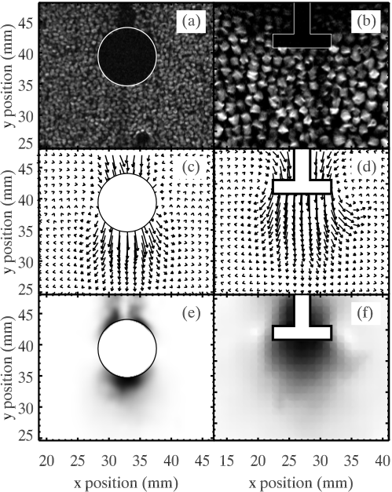

MRI movie of poppy seeds being displaced as an object penetrates downward through the granular bed. The internal flow structure — invisible to ordinary optical imaging — is revealed by MRI.
This collaborative project used MRI imaging to visualize the three-dimensional flow of granular material around a penetrating object. By applying particle tracking and Particle Image Velocimetry (PIV) to the MRI movies, we measured the detailed flow field of displaced grains.
MRI movies of poppy seeds being displaced by a downward-penetrating object were provided by Igor Veretennikov (Notre Dame) and Peter Schiffer (Penn State). From these movies, PIV analysis was used to reconstruct the velocity field of the grains — revealing how granular material flows and redistributes around an intruder.
MRI movie of poppy seeds being displaced as an object penetrates downward through the granular bed. The internal flow structure — invisible to ordinary optical imaging — is revealed by MRI.

Velocity field reconstructed from the MRI movies using Particle Image Velocimetry (PIV), showing how grain flow is organized around the intruder.
This work provides insight into the fundamental mechanics of granular intrusion, relevant to geophysical processes and engineering applications such as foundation design and projectile impact.